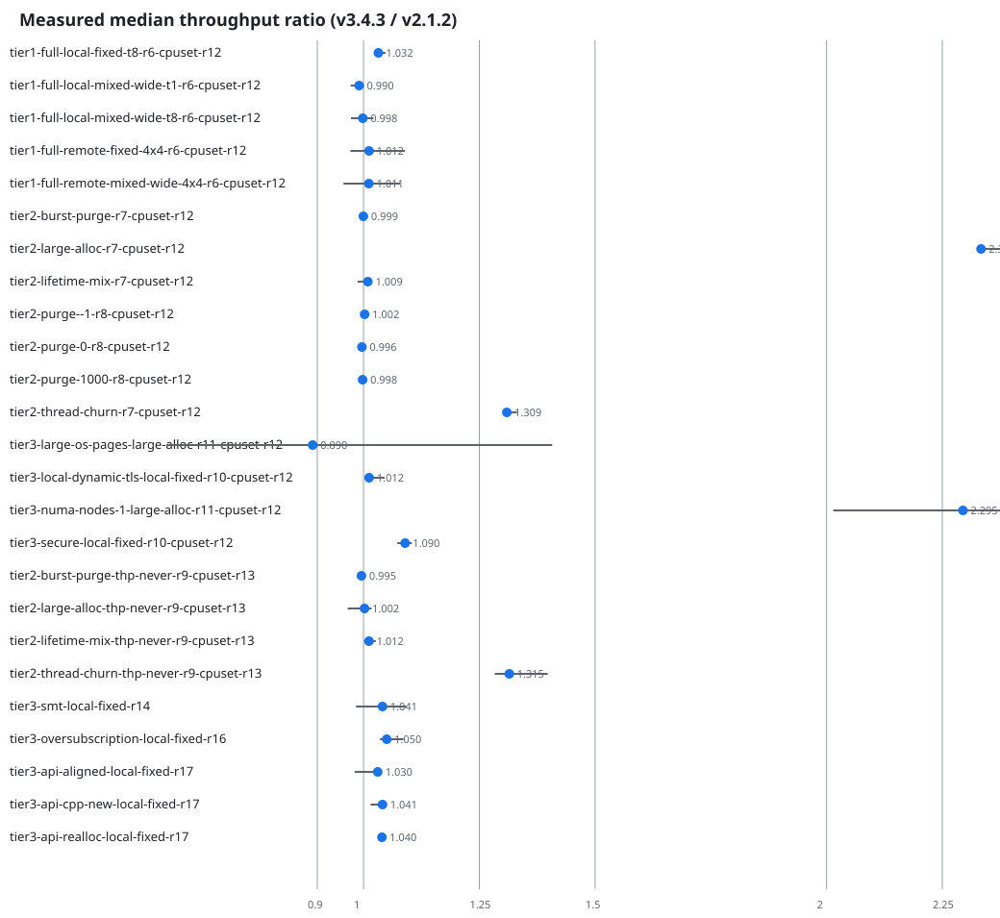

mimalloc v2.1.2와 v3.4.3 비교 실험 보고서
Rocky Linux 8 컨테이너 · 동일 benchmark 바이너리 · LD_PRELOAD 주입 비교
최종 비교 범위는 CPU가 통제된 r12(THP=
madvise)와 r13(THP=never)이다.
요약
최종 비교 데이터는 유효 raw record 600건으로 구성된다. r12는 Tier 1, Tier 2 및 공통 Tier 3 빌드·런타임 통제 실험 480건이며, r13은 THP=never 실험 120건이다. 보고된 각 비교 블록은 v2/v3 쌍 15회씩의 유효 반복을 포함한다.
결과는 이 workload와 이 호스트에 한정된다. 모든 상황에 적용되는 allocator 순위를 뜻하지 않는다. 특히 large allocation 및 large-page 요청 cell은 변동성이 크므로 중앙값만으로 일반화해서는 안 된다.
실험 환경과 통제
| 비교 대상 | microsoft/mimalloc v2.1.2 (43ce4bd7fd34bcc730c1c7471c99995597415488) / v3.4.3 (152fbf2634aeafca3774df791b0a77683035f076) |
|---|---|
| 실행 환경 | 동일 Rocky Linux 8 컨테이너, 동일 benchmark 실행 파일, LD_PRELOAD로 allocator만 교체, 측정 중 네트워크 없음 |
| CPU 집합 | 0,2,4,6,8,10,12,14 — NUMA node 0의 비-SMT 논리 CPU |
| 호스트 토폴로지 | NUMA node 1개, 물리 코어 8개 / 논리 CPU 16개 |
| affinity 검증 | 실행기가 커널의 Cpus_allowed_list를 기록하며, 계획과 cpuset이 다르면 해당 실행을 거부 |
| 보존된 정보 | 빌드 경로·CMake profile·라이브러리 hash·이미지 digest·환경 수집 결과는 manifests/에 보존 |
Tier 1: 핵심 성능 비교
r12, THP=madvise 조건이다. 비율은 v3 throughput / v2 throughput이며, 1보다 크면 v3 처리량이 높다.
| workload | 중앙값 비율 | 평균 비율 95% CI | 해석 |
|---|---|---|---|
| fixed-small local, 8 threads | 1.032 | 1.024–1.047 | 이 cell에서는 v3가 높음 |
| mixed-wide local, 1 thread | 0.990 | 0.972–1.001 | 거의 동등 |
| mixed-wide local, 8 threads | 0.998 | 0.973–1.021 | 거의 동등 |
| fixed-small remote-free, 4:4 | 1.012 | 0.971–1.089 | 신뢰구간이 동등성 1을 포함 |
| mixed-wide remote-free, 4:4 | 1.011 | 0.956–1.079 | 신뢰구간이 동등성 1을 포함 |
Tier 2: 메모리 정책
THP=madvise (r12)
| scenario | 중앙값 v3/v2 | 평균 비율 95% CI |
|---|---|---|
| burst/purge | 0.999 | 0.998–1.001 |
| large allocation | 2.334 | 2.334–4.000 |
| lifetime mix | 1.009 | 0.987–1.018 |
| thread churn | 1.309 | 1.301–1.331 |
v3의 large-allocation 변동계수(CV)는 약 51%이다. 따라서 이 큰 비율은 안정적인 권장 결론이 아니라 고변동 관측값이다.
THP=never (r13)
권한 있는 controller가 기존 madvise 상태를 저장하고 never를 적용하여 120건을 수집한 후 madvise로 복원했다. 컨테이너 종료 후 복원 상태를 별도로 검증했다.
| scenario | 중앙값 v3/v2 | 평균 비율 95% CI |
|---|---|---|
| burst/purge | 0.995 | 0.995–0.997 |
| large allocation | 1.002 | 0.966–1.017 |
| lifetime mix | 1.012 | 1.001–1.026 |
| thread churn | 1.315 | 1.283–1.398 |
공통 purge 정책 (r12, THP=madvise)
MIMALLOC_PURGE_DELAY | 중앙값 v3/v2 | 평균 비율 95% CI |
|---|---|---|
| -1 | 1.002 | 1.001–1.003 |
| 0 | 0.996 | 0.988–1.001 |
| 1000 | 0.998 | 0.996–0.999 |
MIMALLOC_PURGE_DELAY=0은 두 버전 모두의 절대 처리량을 낮췄다. 이는 버전 우위가 아닌 정책 효과다.
Tier 3: 지원되는 확장 비교
| 통제 항목 (r12) | 중앙값 v3/v2 | 평균 비율 95% CI | 해석 |
|---|---|---|---|
| secure build, fixed local 1 thread | 1.090 | 1.073–1.104 | 해당 profile 내부 비교 |
| local-dynamic-TLS, fixed local 8 threads | 1.012 | 1.002–1.045 | 해당 profile 내부 비교 |
| large-OS-page 요청 | 0.890 | 0.574–1.407 | 실제 페이지 할당 미검증, 고변동 |
MIMALLOC_USE_NUMA_NODES=1 | 2.295 | 2.014–3.045 | 단일 노드 호스트의 page-fault 민감 workload |
large-page 요청은 각 버전의 문서화된 환경 변수명을 사용했다. timed process의 AnonHugePages를 수집하지 않았으므로 실제 large-page 할당의 증거로 제시하지 않는다. secure/TLS 행은 동일 build profile 안의 버전 비교이며 profile 자체의 overhead 측정이 아니다.
CPU 토폴로지 확장
| CPU domain | 중앙값 v3/v2 | 평균 비율 95% CI | 해석 |
|---|---|---|---|
| SMT: 논리 CPU 16개, worker 16개 (r14) | 1.041 | 0.984–1.092 | 신뢰구간이 동등성을 포함 |
| oversubscription: 물리 CPU 8개, worker 16개 (r16) | 1.050 | 1.035–1.086 | 명시적 round-robin pinning |
oversubscription harness는 8개 CPU cpuset 내부에서 worker를 round-robin으로 pinning하므로 worker가 고정 CPU domain 밖으로 나갈 수 없다. 이전 r15는 실행 전 benchmark SHA 검증에 실패했으며, invalid 감사 기록으로만 보존했다.
보조 allocation API (r17)
이 블록은 명시적 API 선택 기능이 추가된 별도 harness revision을 사용한다. 따라서 primary malloc/free 결과와 합산하지 않는다. 각 API는 물리 코어 cpuset에서 유효한 15쌍을 가진다.
| API | 중앙값 v3/v2 | 평균 비율 95% CI |
|---|---|---|
C++ new/delete | 1.041 | 1.015–1.045 |
| 64-byte aligned allocation | 1.030 | 0.981–1.034 |
realloc (half-size → target-size) | 1.040 | 1.032–1.046 |

제외 항목과 한계
- r12 이전의 raw record는 변경하지 않는 감사 증거로 보존하지만, 컨테이너가 frozen cpuset으로 실행되지 않았으므로 최종 비율에서 제외했다.
- cross-NUMA는 호스트에 NUMA node가 하나뿐이라 구조적으로 지원되지 않으며, 사용자 결정으로도 제외했다.
- HugeTLB 예약도 사용자 결정으로 제외했다. 호스트에는 현재 1GiB huge page 예약이 없고, 공통 mimalloc 설정은 host-wide 예약 변경이 필요하다.
manifests/execution-plan-tier3-hugetlb-r18.json및scripts/host/set_hugetlb_1g.sh,restore_hugetlb_1g.sh는 준비되어 있으나 의도적으로 실행하지 않았다.- 컨테이너에서 사용할 수 없는 perf counter는 0이 아니라 unavailable로 기록했다.
재현과 원시 데이터
r12는 manifests/execution-plan-cpuset-r12.json을 Docker cpuset 0,2,4,6,8,10,12,14, memory node 0으로 사용한다. r13의 manifests/execution-plan-tier2-thp-never-cpuset-r13.json은 승인된 privileged controller의 scripts/container/run_thp_never.sh를 통해서만 실행한다.
python scripts/analyze_results.py --plan manifests/execution-plan-cpuset-r12.json
python scripts/generate_report.py
python scripts/generate_ratio_plot.py원시 record는 results/raw/, 로그는 results/logs/, 최종 범위 표는 results/summaries/summary-r12.json 및 summary-r13.json, 그래프는 results/plots/throughput-ratios.svg에 있다.